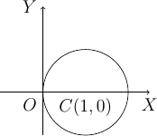
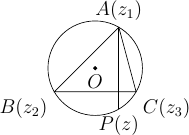
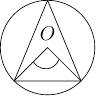

10. Complex Numbers Solutions¶
Let \(\sqrt{7+8i} = a+ib \therefore 7+8i = a^2-b^2 + 2iab\)
Comparing real and imaginary parts we have,
\(a^2 - b^2 = 7 \text{ and } 2ab = 8.\) Now, we can write following
\((a^2+b^2)^2 = (a^2-b^2)^2 + 4a^2b^2 = 7^2 + 8^2 = 113\)
\(\Rightarrow a^2 + b^2 = \pm\sqrt{113}\)
Now we can rewrite this as \(2a^2 = 7 \pm \sqrt{113} \Rightarrow a = \pm \sqrt{\frac{7 \pm \sqrt{113}}{2}}\) and similarly \(b = \pm \sqrt{ \frac{\pm\sqrt{113} - 7}{2}}\) thus we have our complex number \(a + ib.\) Problem no. 2, 3, 4, and 5 can be solved similarly.
Given complex number can be rewritten as \(\frac{x^2}{y^2} + \frac{y^2}{x^2} -2 * \frac{i}{4}\left(\frac{x}{y} + \frac{y}{x}\right) + \left(\frac{i}{4}\right)^2 - \left(\frac{i}{4}\right)^2+ \frac{31}{16}\)
On simplification \(\Rightarrow \left(\frac{x}{y} + \frac{y}{x} - \frac{i}{4}\right)^2\)
Therefore, square root is \(\pm \left(\frac{x}{y} + \frac{y}{x} - \frac{i}{4}\right)\)
Problem no. 7, 8, 9 and 10 can be solved similarly.
- Given expression can be rewritten as \(i^n(i^{80} + i^{50}) = i^n(i^{20*4} + i^{12*4 + 2}) = i^n(1 - 1) = 0.\) Problem no. 12, 13, 14 and 15 can be solved similarly.
Given,
\[\frac{1}{1-cos\theta + 2i sin\theta} = \frac{1-cos\theta - 2i sin\theta} {(1-cos\theta)^2 + 4 sin^2\theta}\]Now all that remains is isolating real and imaginary parts.
Given,
\[\begin{split}\frac{(cosx + isinx)(cosy + isiny)}{(cotu +i)(i + tanv)} \\\end{split}\]\[\begin{split}= \frac{(cosxcosy - sinxsiny)+i(sinxcosy + cosxsiny)}{\frac{(cosu + isinu)(sinv + icosv)}{sinu cosv}}\\\end{split}\]\[= \frac{sinu cosv(cos(x+y) + isin(x+y))}{cos(u+v) + isin(u+v)}\]Now it is as simple as multiplying this with conjugate of denominator and expanding. However, there is a very neat way of solving this using Euler’s formula so let us see that also.
Using Euler’s formula we can rewrite the fraction as
\[sinu cosv\frac{e^{ix}e^{iy}} {e^{iu}e^{i\left(\frac{\pi}{2} - v\right)}}.`\]Now, all which remains is simplyfying this which the reader can do.
Let \(z=x+iy\) then
\[\Rightarrow~z^2 + |z| = x^2 - y^2 + 2ixy + \sqrt{x^2 + y^2} = 0\]Since both real and imaginary parts are zero we have following
\[\begin{split}2xy = 0 \Rightarrow~ x=0 \text{ or } y=0 \\\end{split}\]\[\begin{split}\text{If } x=0 \text{ then} \\\end{split}\]\[\begin{split}-y^2 + \sqrt{y^2} = 0 \\\end{split}\]\[\begin{split}\Rightarrow~y=\pm 1 \\\end{split}\]\[\begin{split}\text{If } x=0 \text{ then} \\\end{split}\]\[x^2 + \sqrt{x^2} = 0\]\[\Rightarrow~x=\pm 1\]But when \(x=\pm 1, x^2 + \sqrt{x^2} = 2 \ne 0\) So our complex numebr is 0 or \(\pm i\).
Second Method: \(z^2 = -|z|\) = a real number
\(\therefore z\) is a real number or is a purely imaginary number.
Case I: When \(z\) is real. Let \(z = x\) then as shown above \(x=0.\)
Case II: When \(z\) is purely imaginary. Let \(z = y\) then as shown above \(y=\pm 1\)
Thus, \(z = 0, \pm i\)
Let \(z = x + iy\). For part \(|z| = 0 \Rightarrow \sqrt{x^2 + y^2} = 0\)
\(\Rightarrow x^2 + y^2 = 0 \Rightarrow x = 0\) and \(y = 0\)
If \(z = 0 \Rightarrow x = 0\) and \(y = 0 \Rightarrow |z| = 0\).
- \[\frac{z_1z_2}{\overline{z_1}} = \frac{(1 - i)(2 + 7i}{1 + i} = \frac{9 + 5i}{1 + i} = \frac{(9 + 5i)(1 - i)}{2} = \frac{14 - 4i}{2}\]\[Im\left(\frac{z_1z_2}{\overline{z_1}}\right) = -2\]
Given \((x + 5i) - (3 - iy)=7 + 8i \Rightarrow (x - 3) + (5 - y)i = 7 + 8i.\) Equating real and imaginary parts we have \(x - 3 = 7 \Rightarrow x = 10\) and \(5 - y = 8 \Rightarrow y = 13\)
Problem 22 is similar and is left as an exercise to the reader.
Given that \(|z| = 1 \Rightarrow x^2 + y^2 = 1\). Now we need to evaluate \(\frac{z - 1}{z + 1} \Rightarrow \frac{(x - 1) + iy}{(x + 1) + iy}\). Multiplying and dividing by conjugate of denominator we have \(\frac{((x - 1) + iy)(x + 1) - iy)}{(x + 1) + iy)(x + 1) - iy)} \Rightarrow \frac{(x^2 + y^2 - 1) + i(xy + y - xy + y)}{(x + 1)^2 + y^2}\). Now we know that from given equality real part of previous expression is zero therefore it is purely imaginary.
Given, \(|z - i| < 1\) we have following
\[|z + 12 -6i| = |(z - i) + (12 - 5i)| \le |z - i| + |12 - 5i|\]\[\begin{split}\Rightarrow |z + 12 - 6i| < 1 + 13 = 14\end{split}\]- \[|z + 6| = |2z + 3| \Rightarrow x^2 + 12x + 36 + y^2 = 4x^2 + 12x + 9 + 4y^2 \Rightarrow 3x^2 + 3y^2 = 27\]\[\Rightarrow x^2 + y^2 = 9 \Rightarrow |z| = 3\]
Given, \(\sqrt{a - ib} = x - iy \Rightarrow a - ib = x^2 - y^2 - i2xy\). Equating real and imaginary parts we have, \(a = x^2 - y^2 \text{and} b = 2xy\). \(\therefore \sqrt{a + ib} = \sqrt{x^2 - y^2 + i2xy} = x + iy\).
We will solve this problem by method of negation. Let us say there is a complex number \(y + iz\) which is root of this equation. Therefore, this root will satisfy this equation. Hence,
\[\frac{A^2}{y + iz -a} + \frac{B^2}{y + iz -b} + ... + \frac{H^2}{y + iz -h} = y + iz + l\]Multiplying and dividng each term with conjugate of denominator we get
\[\frac{A^2(y - a -iz)}{(y - a)^2 + z^2} + \frac{B^2(y - b -iz)}{(y - b)^2 + z^2} + \frac{C^2(y - c -iz)}{(y - c)^2 + z^2} + ... + \frac{H^2(y - h -iz)}{(y - h)^2 + z^2} = y + iz + l\]Considering imaginary parts only, we have
\[-iz\left[\frac{A^2}{(y - a)^2 + z^2} + \frac{B^2}{(y - b)^2 + z^2} + \frac{C^2}{(y - c)^2 + z^2} + ... + \frac{H^2}{(y - h)^2 + z^2}\right] = iz\]\[\Rightarrow iz\left[ 1 + \frac{A^2}{(y - a)^2 + z^2} + \frac{B^2}{(y - b)^2 + z^2} + \frac{C^2}{(y - c)^2 + z^2} + ... + \frac{H^2}{(y - h)^2 + z^2}\right] = 0\]Since the expression has one within bracket it is greater than 1. \(\therefore iz = 0 \Rightarrow z = 0\). Hence, proven.
Since our complex number is unimodular \(|z| = 1\). Let, \(z = cos\theta + isin\theta\). Eqauting it to given equivalent ratio we have
\[cos\theta + isin\theta = \frac{c + i}{c - i} = \frac{(c + i)(c + i)}{(c - i)(c + i)}\]\[\Rightarrow cos\theta + isin\theta = \frac{c^2 - 1 + 2ci}{c^2 + 1}\]Equating real and imaginary parts,
\[cos\theta = \frac{c^2 - 1}{c^2 + 1} \Rightarrow c^2 = cot^2\frac{\theta}{2} \Rightarrow c = \pm cot\frac{\theta}{2}\]\[\text{And} sin\theta = \frac{2c}{c^2 + 1} \Rightarrow c = cot\frac{\theta}{2}, tan\frac{theta}{2}\]From these two common value of \(c\) is \(cot\frac{\theta}{2}\) where \(\theta \ne 2n\pi\).[\(\because z\) is not purely real.]
\(\therefore z = \frac{c + i}{c - i}\).
Let us name the given number as \(z\).
\[z = \frac{sin\frac{x}{2} + cos\frac{x}{2} - itanx}{1 + 2isin\frac{x}{2}}\]\[\Rightarrow z = \frac{(sin\frac{x}{2} + cos\frac{x}{2} - itanx)(1 - 2isin\frac{x}{2})}{(1 + 2isin\frac{x}{2})(1 - 2isin\frac{x}{2})}\]Since \(z\) is real \(Im(z) = 0\) hence equating imaginary part of above to zero we get following since denominator is real:
\[-tanx - 2sin\frac{x}{2}sin\frac{x}{2} -2sin\frac{x}{2}cos\frac{x}{2} = 0\]\[\Rightarrow 2sin\frac{x}{2}\left(sin\frac{x}{2} + cos\frac{x}{2}\right) + \frac{2sin\frac{x}{2}cos\frac{x}{2}}{cosx} = 0\]\[\Rightarrow sin\frac{x}{2} = 0 \Rightarrow x = 2n\pi \text{where} n = 0, 1, 2, 3, ...\]\[\text{or} \left(sin\frac{x}{2} + cos\frac{x}{2}\right)cosx + cos\frac{x}{2} = 0\]\[\Rightarrow 2sin^3\frac{x}{2} - 2cos^3\frac{x}{2} - sin\frac{x}{2} = 0\]\[\Rightarrow tan^3\frac{x}{2} - tan\frac{x}{2} - 2 = 0\]Let \(\alpha\) be a root which satisfies this equation. Hence, \(x = 2n\pi + \alpha, n \in I\).
Let \(z = \sqrt{3} + 2i\) then \(\overline{z} = \sqrt{3} - 2i, |z| = \sqrt{3 + 4} = \sqrt{7}\) and \(arg(z) = tan^{-1}\frac{\sqrt{3}}{2}.\)
Given complex number is:
\[z = \frac{a + ib}{x - iy} = \frac{(a + ib)(x + iy)}{x^2 + y^2} = \frac{(ax -by) + i(ay + bx)}{x^2 + y^2}\]\[\Rightarrow r = |z| = \frac{(ax -by)^2 + (ay + bx)^2}{(x^2 + y^2)^2}\]\[\Rightarrow arg(z) = \theta = tan^{-1}\frac{ax - by}{ay + bx}\]Let \(z_1 = x_1 + iy_1\) and \(z_2 = x_2 + iy_2\). Given,
\[|z_1 + z_2|^2 + |z_1 - z_2|^2 = (x_1 + x_2)^2 + (y_1 + y_2)^2 + (x_1 - x_2)^2 + (y_1 - y_2)^2\]\[\Rightarrow 2{(x_1^2 + y_1^2) + (x_2^2 + y_2^2)} = 2(|z_1|^2 + |z_2|^2).\]Given,
\[|z_1 + z_2|^2 = (x1 + x_2)^2 + (y_1 + y_2)^2 = x_1^2 + x_2^2 + 2x_1x_2 + y_1^2 + y_2^2 + 2y_1y_2 = |z_1|^2 + |z_2|^2 + 2x_1x_2 + 2y_1y_2\]\[\Rightarrow |z_1|^2 + |z_2|^2 + 2Re{(x_1 + iy_1)(x_2 -iy_2)} = |z_1|^2 + |z_2|^2 + 2Re(z_1\overline{z_2})\]\[\text{Also, } \Rightarrow |z_1|^2 + |z_2|^2 + 2Re{(x_1 - iy_1)(x_2 +iy_2)} = |z_1|^2 + |z_2|^2 + 2Re(z_2\overline{z_1}).\]- \[\text{R.H.S. = } \left|\frac{1}{z_1} + \frac{1}{z_2}\right|\]\[\Rightarrow \left|\frac{z_2 + z_1}{z_1z_2}\right|\]\[\because |z_1| = 1 \text{and } |z_2| = 1 \therefore |z_1z_2| = 1\]\[\Rightarrow \left|\frac{z_2 + z_1}{z_1z_2}\right| = |z_1 + z_2|\]
Given,
\[|z -2| = 2|z - 1| \Rightarrow x^2 - 4x + 4 = 4x^2 -8x +4 + 4y^2\]\[\Rightarrow 3x^2 + 3y^2 = 4x \Rightarrow |z|^2 = \frac{4}{3}Re(z).\]Given,
\[\sqrt[3]{a+ib} = x+iy \Rightarrow a + ib = x^3 -3xy^2 + i(3x^2y -y^3)\]Equating real and imaginary parts
\[a = x^3 - 3xy^2 \text{and } b = 3x^2y -y^3\]\[\Rightarrow \frac{a}{x} = x^2 - 3y^2 \text{and } \frac{b}{y} = 3x^2 - y^2\]Adding both
\[\frac{a}{x} + \frac{b}{y} = 4(x^2 - y^2).\]Given,
\[x + iy = \sqrt{\frac{a + ib}{c + ib}} \Rightarrow (x + iy)^2 = \frac{a + ib}{c + id}\]\[\Rightarrow |(x + iy)^2| = \left|\frac{a + ib}{c + id}\right| = \frac{|a + ib|}{|c + id|}\]\[\Rightarrow (x^2 + y^2)^2 = \frac{a^2 + b^2}{c^2 + d^2}.\]Given,
\[\frac{3}{2 + cos\theta + isin\theta} = a + ib \Rightarrow \frac{3(2 + cos\theta -isin\theta)}{(2 + cos\theta + isin\theta)(2 + cos\theta - isin\theta)} = a + ib\]Taking 3 to denominator and equating real and imaginary parts we have
\[a = 2 + cos\theta \text{and } b = sin\theta\]\[\Rightarrow a^2 + b^2 = 4 + 4cos\theta + cos^2\theta + sin^2\theta\]\[\Rightarrow 5 + 4cos\theta = 8 + 4cos\theta - 3 = 4a - 3.\]Given,
\[|2z - 1| = |z - 2|, \text{let } z = x + iy\]\[\Rightarrow 4x^2 - 4x + 1 + 4y^2 = x^2 - 4x +4 + y^2\]\[\Rightarrow 3x^2 + 3y^2 = 3 \Rightarrow x^2 + y^2 = 1 \Rightarrow |z| = 1.\]Given,
\[m + in = \frac{1 - ix}{1 + ix} = \frac{1 - x^2 - 2ix}{1 + x^2}\]Equating real and imaginary parts, we get
\[m = \frac{1 - x^2}{1 + x^2} \text{and } n = -\frac{2x}{1 + x^2}\]\[\therefore m^2 + n^2 = \frac{(1 - x^2)^2}{(1 + x^2)^2} + \frac{4x^2}{(1 + x^2)^2} = 1.\]This is similar to problem 40 and hence left as an exercise to reader.
Given,
\[\left(1+i\frac{x}{a}\right) \left(1+i\frac{x}{c}\right) \left(1+i\frac{x}{c}\right) ... = A+iB\]\[\text{Let, } L.H.S. = z1 \text{and } R.H.S. = z2\]\[\because z1 = z2 \therefore z1\overline{z1} = z2\overline{z2}\]\[\therefore \left(1+\frac{x^2}{a^2}\right) \left(1+\frac{x^2}{b^2}\right) \left(1+\frac{x^2}{c^2}\right) ... = A^2+B^2 [\because \overline{z1z2} = \overline{z1}~\overline{z2}]\]Let \(z_1 = x_1 + iy_1\) and \(z_2 = x_2 + iy_2\). Then we have,
\[\frac{z_1 + z_2}{z_1 - z_2} = \frac{((x_1 + x_2) + i(y_1 + y_2))((x_1 - x_2) + i(y_1 - y_2))}{((x_1 - x_2) - i(y_1 - y_2))((x_1 - x_2) + i(y_1 - y_2))}\]Neglecting the denominator
\[\Rightarrow \text{Numerator } = x_1^2 -x_2^2 + y_1^2 - y_2^2 + i(x_1y_2 - x_2y_1)\]Now it is given that \(|z_1| = |z_2|\). Hence result is either 0 or purely imaginary based on the fact if \(z_1\) is purely real and \(z_2\) is purely imaginary or not.
Let, \(z = x + iy\). Now given is that,
\[1\cap z \Rightarrow 1 + 0i \cap x + iy \Rightarrow 1 \le x \text{and } 0 \le y.\]Now,
\[\text{Let, } p = \frac{1 - z}{1 + z} = \frac{(1 - x + iy)(1 + x - iy)}{(1 + x + iy)(1 + x - iy)} = \frac{1 - x^2 - y^2 - i2y}{(1 + x)^2 + y^2}\]\[\because x \ge 1 \text{ and } y \ge 0 \therefore Re(p) \le 0 \text{and } Im(p) \le 0.\]From the given equation we can deduce that
\[z = - \frac{1}{|z| + a}\]Since \(a > 0\) and \(|z| > 0, z\) is a negative real number from previous equation.
Given,
\[x + iy + \alpha \sqrt{(x - 1)^2 + y^2} + 2i = 0\]Equating real and imaginary parts
\[y + 2 = 0 \Rightarrow y = -2 \text{and } x + \alpha \sqrt{(x - 1)^2 + y^2} = 0\]Substituing value of \(y\) in second equation
\[\alpha \sqrt{x^2 -2x + 5} = -x \Rightarrow (\alpha^2 - 1)x^2 - 2\alpha^2x + 5\alpha^2 = 0\]Solving this quadratic equation is left as an exercise.
This is similar to problem no. 46 and is left as an exercise. Reader is implored to study chapter on quadratic equations for this.
- \[(x + iy)^5 = x^5 + i5x^4y - 10x^3y^2 - i10x^2y^3 + 5xy^4 + iy^5\]\[= (x^5 -10x^3y^2 + 5xy^4) + i(5x^4y -10x^2y^3 + y^5)\]
Taking modulus and squaring
\[(x^2 + y^2)^5 = (x^5 - 10x^3y^2 + 5xy^4)^2 + (5x^4y - 10x^2y^3 + y^5)^2\] - \[(x + ia)(x + ib)(x + ic) = [x^2 -ab + i(a + b)x](x + ic)\]\[= (x^3 - abx - acx -bcx) + i(cx^2 -abc + ax^2 + bx^2)\]
Taking modulus and squaring
\[(x^2 + a^2)(x^2 + b^2)(x^2 + c^2) = (x^3 - abx - acx -bcx)^2 + (cx^2 -abc + ax^2 + bx^2)^2\] - \[(1 + x)^n = a_0 + a_1x + a_2x^2 + a_3x^3 + a_4x^4 + ...\]
Substituing \(x = i\) we get
\[(1 + i)^n = a_0 + ia_1 - a_2 - ia_3 + a_4 + ...\]Taking modulus and squaring
\[2^n = (a_0 - a_2 + a_4 - ...)^2 + ( a_1 - a_3 + a_5 - ...)^2\] Let \(x\) be a real root then we have
\[x^2 + \alpha x + \beta = 0 \Rightarrow x^2 + \alpha x = -\beta\]Taking conjugate we have
\[-\overline{\beta} = \overline{x^2} + \overline{\alpha x}\]\[-\overline{\beta} = x^2 + \overline{\alpha}x [\because x \text{ is real.}]\]Subtracting, we get
\[\beta - \overline{\beta} = (\overline{\alpha} - \alpha)x\]Multiplying first equation with \(\overline{\alpha}\) and second with \(\alpha\) and subtracting we get
\[\alpha\overline{\beta} - \overline{\alpha}\beta = (\overline{\alpha} - \alpha)x^2\]Thus we have our desired result.
Let \(f(z) = m(z - i) + i\) and \(f(z) = n(z + i) + 1 + i\) where \(m\) and \(n\) are quotients upon division. Substituing \(z = i\) in the first equation and \(z = -i\) in the second we get. \(f(i) = i\) and \(f(-i) = 1+i\).
Let \(g(z)\) be the quotient and \(az + b\) be the remainder upon division of \(f(z)\) by \(z^2 + 1\). Hence, we have
\(f(z) = g(z)(z^2 + 1) + az + b\). Substituting \(z = i\) and \(z = -i\) we have
\[f(i) = i = ai + b [\because i^2 + 1 = 0] f(-i) = 1 + i = -ai + b [\because (-i)^2 + 1 = 0]\]Adding
\[2b = 1 + 2i \Rightarrow b = \frac{1 + 2i}{2}\]Now \(a\) can be calculated and \(az + b\) evaluated.
Given,
\[iz^3 + z^2 - z + i = 0 \Rightarrow iz^2(z - i) - 1(z - i) = 0 \Rightarrow (iz^2 - 1)(z - i) = 0\]\[\therefore \text{Either } iz^2 - 1 = 0 \Rightarrow z^2 = -i \Rightarrow |z|^2 = 1 \Rightarrow |z| = 1\]\[\text{or } z - i = 0 \Rightarrow z = i \Rightarrow |z| = 1\]We know that for two complex numbers \(z1\) and \(z2\)
\[|z1 + z2|^2 + |z1 - z2|^2 = 2|z1|^2 + 2|z2|^2\]\[\text{Let, } z1 = \alpha + \sqrt{\alpha^2 - \beta^2} \text{and } z1 = \alpha - \sqrt{\alpha^2 - \beta^2}\]\[(|z1| + |z2|)^2 = [|z1|^2 + |z2|^2] + 2|z1||z2|\]\[= \frac{1}{2}[|z1 + z2|^2 + |z1 - z2|^2] + 2|z1z2|\]\[= \frac{1}{2}[|2\alpha|^2 + |2\sqrt{\alpha^2 - \beta^2}|^2] + 2|(\alpha + \sqrt{\alpha^2 - \beta^2})(\alpha - \sqrt{\alpha^2 - \beta^2})|\]\[= \frac{1}{2}[4|\alpha|^2 + 2|\alpha^2 - \beta^2|] + 2|\alpha^2 - (\alpha^2 - \beta^2)|\]\[= (|\alpha + \beta| + |\alpha - \beta|)^2\]Hence, proven.
Given, \(|z1| = |z2| = 1 \therefore~a^2 + b^2 = 1\) and \(c^2 + d^2 = 1\).
\[\text{Also given that } Re(z1\overline{z2}) = 0 \Rightarrow ac + bd = 0 \therefore \frac{a}{d} = - \frac{b}{c} = p\]\[\therefore a = pd \text{ and } b = -pc\]\[\because a^2 + b^2 = 1 \Rightarrow p^2(c^2 + d^2) = 1 \Rightarrow p^2 = 1 (\because c^2 + d^2 = 1) \Rightarrow p = \pm 1\]Now when \(p = 1, a = p \text{ and } b = -c\) and when \(p = -1, a = -p \text{ and } b = c\).
Now from these equalities asked equalities can be proven.
To be proven is that
\[\begin{split}\left|\frac{z_1 - z_2}{1 - \overline{z_1}z_2}\right| < 1\end{split}\]\[\begin{split}\Rightarrow \left|\frac{z_1 - z_2}{1 - \overline{z_1}z_2}\right|^2 < 1\end{split}\]\[\begin{split}\Rightarrow |z_1 - z_2|^2 < |1 - \overline{z_1}z_2|^2\end{split}\]\[\begin{split}\Rightarrow |z_1 - z_2|\overline{|z_1 - z_2|} < (1 - \overline{z_1}z_2)\overline{(1 - \overline{z_1}z_2)}\end{split}\]\[\begin{split}\Rightarrow (z_1 - z_2)(\overline{z_1} - \overline{z_2}) < (1 - \overline{z_1}z_2)(1 - z_1\overline{z_2})\end{split}\]\[\begin{split}\Rightarrow |z_1|^2 + |z_2|^2 < 1 + |z_1|^2|z_2|^2\end{split}\]\[\begin{split}\Rightarrow (1 + |z_1|)(1 + |z_2|)(1 - |z_1|)(1 - |z_2|) > 0\end{split}\]Now if \(|z_1| < 1\) and \(|z_2| < 1\) hence our desired result is proven.
57 and 58 are left as an exercise to the reader.
Let \(z = r_1e^{i\theta_1}\) and \(w = r_2e^{i\theta_2}\). \(\because |z| \le 1\) and \(|w| \le 1\) we have \(r+1 \le 1\) and \(r_2 \le 1\).
\[|z - w|^2 = (r_1cos\theta_1 - r_2cos\theta_2)^2 + (r_1sin\theta_1 - r_2sin\theta_2)^2\]\[= r_1^2 + r_2^2 -2r_1r_2cos(\theta_1 - \theta_2)\]\[= (r_1 - r_2)^2 + 2r_1r_2 - 2r_1r_2cos(\theta_1 - \theta_2)\]\[= (r_1 - r_2)^2 + 4r_1r_2sin\left(\frac{\theta_1 - \theta_2}{2}\right)^2\]\[\le (r_1 - r_2)^2 + (\theta_1 - \theta_2)^2 [\because r_1, r_2 \le 1 \text{ and } sin\theta \le \theta.]\]\[= (|z| - |w|)^2 + (Arg(z) - Arg(w))^2\]- Let \(z = r(cos\theta + isin\theta).\)
\[\frac{z}{|z|} = cos\theta - isin\theta \Rightarrow \left|\frac{z}{|z|} - 1\right| = |(cos\theta - 1) + isin\theta| = \sqrt{(cos\theta - 1)^2 + sin^2\theta}\]\[= \sqrt{2 - 2cos\theta} = \sqrt{4sin^2\frac{\theta}{2}} = 2sin\frac{\theta}{2} \le \theta = arg(z)\]- \(|z - |z|| = |z - 1 - (|z| - 1)| \ge |z - 1| - ||z| - 1|\)
Now it can be easily proven that \(|z - |z|| = r|\theta| = |z||arg(z)|\)
Hence, our desired result is proven.
Let \(z = r(cos\theta + isin\theta) \therefore \frac{1}{z} = \frac{1}{r}(cos\theta -isin\theta)\). Now
\[\left|z + \frac{1}{z}\right| = a\]\[\text{L. H. S. = }\left|(r + \frac{1}{r})cos\theta + i(r - \frac{1}{r})sin\theta\right| = \left(r + \frac{1}{r}\right)cos^2\theta + \left(r - \frac{1}{r}\right)^2sin^2\theta = a^2\]\[\Rightarrow \left(r - \frac{1}{r}\right)^2 = a^2 - 4cos^2\theta\]Now, when \(r\) will be greatest \(r - \frac{1}{r}\) will be greatest, which will be greatest when \(cos\theta = 0\). Therefore,
\[\begin{split}r - \frac{1}{r} = a [\because r - \frac{1}{r} > 0 \text{ and } a > 0.]\end{split}\]\[\therefore r^2 - ar - 1 = 0\]\[\therefore \text{Greatest value of } r = \frac{a + \sqrt{a^2 + 4}}{2}\]Similarly, least value can be found.
62, 63 and 64 are left as exercise for the reader.
Since roots of the equation are given we can write the following:
\[(x - a)(x - b) ... (x - k) = x^n + p_1x^{n-1} + p_2x^{n-2} + ... + p_{n-1}x + p_n\]substituing \(x = i\) we get
\[(i - a)(i - b) ... (i - k) = i^n + p_1i^{n-1} + p_2i^{n - 2} + ... + p_{n-1}i + p_n\]Dividing both sides by \(i^n\)
\[(1 + ia)(1 + ib) .. (1 + ik) = 1 + \frac{p_1}{i} + \frac{p-2}{i^2} + ... + \frac{p_{n-1}}{i^{n-1}} + \frac{1}{i^n}\]Taking modulus and squaring we get our desired result. Problem no. 66 is left as an exercise for the reader.
Since the triangle is an equilateral triangle all three sides are equal.
\[\Rightarrow |z1 - z2| = |z2 - z2| = |z3 - z1| \Rightarrow |z1 - z2|^2 = |z2 - z2|^2 = |z3 - z1|^2\]\[\Rightarrow (z1 - z2)(\overline{z1} - \overline{z2}) = (z2 - z3)(\overline{z2} - \overline{z3}) = (z3 - z1)(\overline{z3} - \overline{z1}) = r(say)\]\[\Rightarrow r\left(\frac{1}{z1 - z2} + \frac{1}{z2 - z3} + \frac{1}{z3 - z1}\right) = \overline{z1} - \overline{z2} + \overline{z2} - \overline{z3} + \overline{z3} - \overline{z1} = 0\]\[\Rightarrow \frac{1}{z1 - z2} + \frac{1}{z2 - z3} + \frac{1}{z3 - z1} = 0\]\[\Rightarrow (z1 - z2)(z2 - z3) + (z1 - z2)(z3 - z1) + (z3 - z1)(z2 - z3) = 0\]Now this leads upon multipliation and rearranging to:
\[z1^2 + z2^2 + z3^2 = z1z2 + z2z3 + z3z1\]Given,
\[z_1^2 + z_2^2 -2z_1z_2cos\theta = 0\]Dividing by \(z_2^2\) we get
\[\left(\frac{z_1}{z_2}\right)^2 + 1 - 2\frac{z_1}{z_2}cos\theta = 0\]Solving this as a quaddratic equation we have roots as
\[\frac{z_1}{z_2} = \frac{2cos\theta \pm~\sqrt{4cos^2\theta - 4} }{2}\]\[\Rightarrow \frac{z_1}{z_2} = cos\theta \pm isin\theta\]\[\Rightarrow |z_1| = |z_2|.\]Hence, \(z_1, z_2\) and origin form an isosceles triangle.
Let points \(O, P\) and \(Q\) represents origin, \(A\) and \(B\) respectivel.
Given,
\[\frac{A}{B} + \frac{B}{A} = 1 \Rightarrow A^2 + B^2 = AB \Rightarrow A^2 = B(A - B) \text{ and } B^2 = A(B - A)\]Dividing
\[\frac{A^2}{B^2} = -\frac{B}{A} \Rightarrow A^3 = -B^3 \Rightarrow |A| = |B|\]\[\Rightarrow |B| = |B - A| \text{ and } |A| = |B - A|\]This \(\triangle OPQ\) is an isosceles triangle.
Let \(z_1 = x_1 + iy_1, z_2 = x_2 + iy_2\) and \(z_3 = x_3 +iy_3.\) Then area of a triangle is given by
\[\begin{split}= \left|\frac{1}{2}\begin{vmatrix}x_1 & y_1 & 1\\x_2 & y_2 & 1\\x_3 & y_3 & 1\end{vmatrix}\right|\end{split}\]\[C_1 \rightarrow C_1 + iC_2\]\[\begin{split}= \left|\frac{1}{2}\begin{vmatrix}x_1 + iy_1 & y_1 & 1\\x_2 + iy_2 & y_2 & 1\\x_3 + iy_3 & y_3 & 1\end{vmatrix}\right|\end{split}\]Now \(C_2\) can be written as \(\frac{1}{2i}(z - \overline{z})\).
\[\begin{split}= \left|\frac{1}{2}\begin{vmatrix}z_1 & \frac{1}{2i}(z_1 - \overline{z_1}) & 1\\z_2 & \frac{1}{2i}(z_2 - \overline{z_2}) & 1\\z_3 & \frac{1}{2i}(z_3 - \overline{z_3}) & 1\end{vmatrix}\right|\end{split}\]Taking \(\frac{1}{2i}\) common and \(C_2 \rightarrow C_2 - C_1\)
\[\begin{split}= \left|\frac{1}{4i}\begin{vmatrix}z_1 & -\overline{z_1} & 1\\z_2 & -\overline{z_2} & 1\\z_3 & -\overline{z_3} & 1\end{vmatrix}\right|\end{split}\]Now expanding this will yield desired result.
Given,
\[(z + 1)^n = z^n \Rightarrow \left(1 + \frac{1}{z}\right)^n = 1 \Rightarrow 1 + \frac{1}{z} = 1^{\frac{1}{n}}\]\[\Rightarrow 1 + \frac{1}{z} = (cos\theta + isin\theta)^{\frac{1}{n}} = cos\frac{2r\pi}{n} + isin\frac{2r\pi}{n} \text{ where } r = 0, 1, 2, 3, ...\]But when \(r = 0 \Rightarrow \frac{1}{z} = 0\) which is not possible.
Solving for \(z\) will lead us to
\[z = -\frac{1}{2} - \frac{i}{2}cos\frac{r\pi}{n}\]Thus \(Re(z) = -\frac{1}{2}\) which implies the roots lie on the line \(x = -\frac{1}{2}\) and therefore we can conclude they are collinear.
Let \(z_1, z_2, z_3\) and \(z_4\) are represented by points \(A, B, C\) and \(D\). Then, we have
\[AD = |z_1 - z_4|, BC = |z_2 - z_3|, CD = |z_3 - z_4| \text{ and so on.}\]\[(z_1 - z_4)(z_2 - z_3) = (z_2 - z_4)(z_3 - z_1) + (z_3 - z_4)(z_1 - z_2)\]\[\Rightarrow |z_1 - z_4||z_2 - z_3|~\le~|z_2 - z_4||z_3 - z_1| + |z_3 - z_4| + |z_1 - z_2|\]Hence proven.
Equation of line passing trhough \(a\) and \(ib\) is given by
\[\begin{split}\begin{vmatrix}z & \overline{z} & 1\\ a & \overline{a} & 1\\ ib & -i\overline{b} & 1\end{vmatrix} = 0\end{split}\]\[\Rightarrow (\overline{a} + i\overline{b})z - (a - ib)\overline{z} - i(a\overline{b} + \overline{a}b) = 0\]\[\because a, b \in R, \overline{a} = a, \overline{b} = b\]\[\Rightarrow (a + ib)z - (a - ib)\overline{z} = 2abi\]Dividing both sides by \(2abi\) we get desired result.
Given,
\[|z_1| - |z_2| = |z_1 - z_2| \Rightarrow OA - OB = AB,\]where \(O, A\) and \(B\) represents the complex numbers of origin, \(z_1\) and \(z_2\). This implies \(A\) and \(B\) lie on the line passing through origin and they lie on the same side of origin.
\(\therefore arg~z_1 - arg~z_2 = 2n\pi.\)
Given,
\[z - z_1.z_2. ... .z_n = 0\]\[\Rightarrow arg~z - arg(z_1.z_2. ... .z_n) = 0\]\[\Rightarrow arg~z - arg(z_1 + z_2 + ... + z_n) = 0\]We know that \(\triangle ABC\) and \(\triangle DOE\) will be similar if
\[ \frac{AC}{AB} = \frac{DE}{DO} \text{ and } \angle BAC = \angle ODE\]\[i.e. \left|\frac{z_3 - z_1}{z_2 - z_1}\right| = \left|\frac{z_5 - z_4}{0 - z_4}\right|\]\[\text{and } arg\left(\frac{z_3 - z_1}{z_2 - z_1}\right) = \left(\frac{z_5 - z_4}{0 - z_4}\right)\]By solving two previous equations we get our desired result.
Given, \(OA = 1\) and \(|z| = 1 \therefore OP = 1\) and \(\therefore OP = OA\)
\(OP_0 = |z_0|\) and \(OQ = |z\overline{z_0}| = |z||\overline{z_0}| = |\overline{z_0}| = |z_0|\)
\(\therefore OP_0 = OQ\)
\[\angle P_0OP = arg\left(\frac{z_0}{z}\right)\]\[\angle AOQ = arg\left(\frac{1}{z\overline{z_0}}\right) = arg\left(\frac{\overline{z}}{\overline{z_0}}\right) [\because z\overline{z} = 1]\]\[= -arg\left(\frac{\overline{z_0}}{z}\right) = arg\left(\frac{z_0}{z}\right) [\because -arg~\overline{z} = arg~z]\]Thus the triangles are congruent. Now since \(PP_0 = AQ \Rightarrow |z - z_0| = |zz_0 - 1|\)
Using section formula we have,
\[P = \frac{az_2 + bz_1}{a + b} \text{ and } Q = \frac{az_2 - bz_1}{a - b}\]Now finding \(OP^2 + OQ^2\) is as easy as solving an expression which is left as an exercise.
Given,
\[a + b + c = 0 \text{ and } az_1 + bz_2 + cz_3 = 0\]So we have
\[az_1 + bz_2 - (a + b)z_3 = 0 \Rightarrow z_3 = \frac{az_1 + bz_2}{a + b}\]This implies that \(z_3\) lies on the line joining \(z_1\) and \(z_3\) in the ratio of \(a:b\) inernally or externally depending on their sign.
Let equation of a line passing through origin is \(a\overline{z} + \overline{a}z = 0.\) Now let us assume that all the points lie on the same side of this line so we have
\[\begin{split}a\overline{z_i} + \overline{a}z_i > 0 \text{ or } a\overline{z_i} + \overline{a}z_i < 0 \text{ for } i = 1, 2, 3, ..., n\end{split}\]Thus,
\[\begin{split}a\sum_{i=1}^n\overline{z_i} + \overline{a}\sum_{i=1}^nz_i > 0 \text{ or } a\sum_{i=1}^n\overline{z_i} + \overline{a}\sum_{i=1}^nz_i < 0\end{split}\]But it is given that \(\sum_{i=1}^nz_i = 0\). Therefore all these points lie on different sides of the line passing through the origin.
This is similar to 80. and is left as an exercise to the reader.
Let \(OA\) and \(OB\) be the unit vectors representing \(z_1\) and \(z_2\). Then, we have
\[\overrightarrow{OA} = \frac{z_1}{|z_1|}, \overrightarrow{OB} = \frac{z_2}{|z_2|}\]Using vector math we can now say that the complex number representing the bisector of angle between these two will be given by
\[z = t\left(\frac{z_1}{|z_1|} + \frac{z_2}{|z_2|}\right), \text{ where } t \text{ is an arbitrary number.}\]Problem no. 83. to 90 are based on basic geometry and is left as exercises for the reader.
Given,
\[|z| = 2, \text{ Let } z_1 = -1 + 5z \Rightarrow |z_1 + 1| = 5|z| = 10\]Thus, \(z1\) lies on a circle with center (-1, 0) and radius 10.
Given \(z - 25i \le 15.\) It represents a circle having center at (0, 25) and having a radius of 15. The pictorial representation is given below:
![\draw[->, => stealth] (-1, 0) -- (3, 0);
\draw[->, => stealth] (0, -1) -- (0, 4.5);
\draw (0, 2.5) circle(1.5);
\draw (0, 0) -- (3, 4);
\draw (0, 2.5) -- (1.2, 1.6);
\draw (3, 0) node[anchor=north] {$X$};
\draw (0, 4.5) node[anchor=east] {$Y$};
\draw (0, 2.5) node[anchor=east] {$C(0, 2.5)$};
\draw (3mm, 0) arc(0:atan(1.333):3mm);
\draw (3mm, 2mm) node[anchor=west] {$\theta$};
\draw (0, 0) node[anchor=north east] {$O$};
\draw (1.2, 1.6) node[anchor=north west] {$P$};
\draw (0, 2.2) arc(270:270+atan(1.333):3mm);
\draw (.1, 2.2) node[anchor=north west] {$\theta$};](../_images/tikz-74500f3828dba12bc21aa8e75f23af95fb370f64.png)
Let \(OP\) be tangent to the circle at point \(P.\)
Let \(\angle POX=\theta\) then \(\angle OCP=\theta.\) Now \(OC=25, CP=15 \therefore OP=20.\) Now \(tan\theta = \frac{OP}{CP} = \frac{20}{15} = \frac{4}{3}.\)
\(\therefore\) Least positive value of argz = \(\theta = tan^{-1}\frac{4}{3}\)
Given \(|z - z_1|^2 + |z - z_2|^2 = k\)
\[\Rightarrow |z|^2 + |z_1|^2 - 2R(z\overline{z_1}) + |z|^2 + |z_2|^2 -2R(z\overline{z_2}) = k\]\[\Rightarrow 2|z|^2 - 2R[z(\overline{z_1} + \overline{z_2})] = k - (|z_1|^2 + |z_2|^2)\]\[\Rightarrow |z|^2 - 2R\left[z\left(\frac{\overline{z_1 + z_2}}{2}\right)\right] + \frac{1}{4}|z_1 + z_2|^2 = \frac{k}{2} + \frac{1}{4}[|z_1 + z_2|^2 - 2|z_1|^2 - 2|z_2|^2]\]\[\Rightarrow \left[z - \frac{z_1 + z_2}{2}\right]^2 = \frac{1}{2}\left[k - \frac{1}{2}\{|z_1|^2 + |z_2|^2 -2R(z_1\overline{z_2})\}\right]\]\[\Rightarrow \left[z - \frac{z_1 + z_2}{2}\right]^2 = \frac{1}{2}\left[k - \frac{1}{2}|z_1 - z_2|^2\right]\]This equation represents a circle with center at \(\frac{z_1 + z_2}{2}\) and radius \(\frac{1}{2}\sqrt{2k - |z_1 - z_2|^2},\) provided \(k \ge \frac{|z_1 - z_2|^2}{2}.\)
Since \(|z - 1| = 1, z\) represents a circle with center at (1, 0) and a radius of 1. It is shown below:

Now, \(|z - 1| = 1.\) Let \(z = x + iy\) then \(x^2 + y^2 = 2x.\) Also,
\[\frac{z - 2}{z} = \frac{x - 2 + iy}{x + iy} = \frac{x^2 - 2x + y^2 + i2y}{x^2 + y^2} = i\frac{y}{x}\]Now from figure shown z will be either in first quadrant or fourth quadrant.
Case I. When \(z\) lies in the first quadrant. This implies \(arg z = \theta,\) where \(tan\theta = \left|\frac{y}{x}\right| = \frac{y}{x} \therefore itan(arg z) = itan\theta = i\frac{y}{x}.\)
Case II. When \(z\) lies in the fourth quadrant. Thus \(arg z = 2\pi - \theta,\) where \(tan\theta = \left|\frac{y}{x}\right| = \frac{-y}{x}.\) Now \(itan(arg z) = itan(2\pi - \theta) = -tan\theta = i\frac{y}{x}\)
Hence, proven.
Let \(z = x + iy.\) Hence,
\[arg\left(\frac{z - 1}{z + 1}\right) = \frac{\pi}{4}\]\[\Rightarrow tan(arg\left(\frac{z - 1}{z + 1}\right)) = 1\]\[\Rightarrow \frac{2y}{x^2 + y^2 - 1} = 1\]\[\Rightarrow x^2 + y^2 - 2y - 1 = 0\]Clearly, it is a cricle having center at (0, 1) and radius \(\sqrt{2}.\) Again, \(\frac{z - 1}{z + 1}\) is in first quadrant. This means \(x^2 + y^2 > 1\) and \(y > 0.\)
Thus, locus of \(z\) is the arc of circle having center at (0, 1) and radius \(\sqrt{2}\) above x-axis.
Let \(z = x + iy.\) Now,
\[u + iv = (z - 1)(cos\alpha - isin\alpha) + \frac{1}{z - 1}(cos\alpha + isin\alpha)\]\[= (x - 1)cos\alpha + ysin\alpha + i[ycos\alpha - (x - 1)sin\alpha] + \frac{x - 1 - iy}{(x - 1)^2 + y^2}(cos\alpha + isin\alpha)\]Equating imaginary parts, we get
\[v = ycos\alpha - (x - 1)sin\alpha + \frac{(x - 1)sin\alpha - ycos\alpha}{(x - 1)^2 + y^2} = 0\]\[\Rightarrow [ycos\alpha - (x - 1)sin\alpha][(x - 1)^2 + y^2] = 0\]\(\therefore\) either \(ycos\alpha - (x - 1)sin\alpha = 0 \Rightarrow y = tan\alpha(x - 1),\) which is a straight line passing through (1, 0).
or \((x - 1)^2 + y^2 - 1 = 0\) which is a circle with center at (1, 0) and radius unity. Hence, proven.
Given,
\[1 + a_1z + a_2z^2 + ... + a_nz^n = 0\]\[\Rightarrow |a_1z| + |a_2z^2| + ... + |a_nz^n| \ge 1\]\[\Rightarrow L.H.S. = |a_1||z| + |a_2||z|^2 + ... + |a_n||z|^n\]\[\begin{split}< 2|z| + 2|z|^2 + ... to \infty [\because |a_n| < 2]\end{split}\]Let \(|z| < 1\) then
\[\begin{split}\frac{2|z|}{1 - |z|} < 1 \Rightarrow |z| > \frac{1}{3}\end{split}\]When \(|z| > 1\) clearly \(|z| > \frac{1}{3}\) hence \(z\) does not lie in the interior of the circle with radius \(\frac{1}{3}.\)
Given,
\[2 = z^ncos\theta_0 + z^{n - 1}cos\theta_1 + ... + zcos\theta_n\]\[\Rightarrow 2 = |z^ncos\theta_0 + z^{n - 1}cos\theta_1 + ... + zcos\theta_n|\]\[\begin{split}< |z^ncos\theta_0| + |z^{n - 1}cos\theta_1| + ... + |zcos\theta_n|\end{split}\]\[\le |z|^n + |z|^{n - 1} + ... + 1 [\because cos\theta \le 1]\]\[\begin{split}< 1 + |z| + |z|^2 + ... to \infty\end{split}\]\[\begin{split}\Rightarrow 2 < \frac{|z|}{1 - |z|} [when |z| < 1]\end{split}\]\[\begin{split}\Rightarrow |z| > \frac{1}{2}\end{split}\]Also, when \(|z| > 1\) then \(|z| > \frac{1}{2}.\) Thus all roots lie outside the circle \(|z| = \frac{1}{2}.\)
Points \(z_1, z_2, z_3, z_4\) will be concyclic if
\[\left(\frac{z_2 - z_4}{z_1 - z_4}\right)\left(\frac{z_1 - z_3}{z_2 - z_3}\right) \text{ is real.}\]Given,
\[\frac{2}{z_1} = \frac{1}{z_2} + \frac{1}{z_3} = \frac{z_2 + z_3}{z_2z_3}\]\[\therefore z_1 = \frac{2z_2z_3}{z_1 + z_3}\]Now,
\[\left(\frac{z_2 - z_4}{z_1 - z_4}\right)\left(\frac{z_1 - z_3}{z_2 - z_3}\right)\]\[= \left(\frac{z_2 - z_4}{\frac{2z_2z_3}{z_2 + z_3} - z_4}\right)\left(\frac{\frac{2z_2z_3}{z_2 + z_3} - z_3}{z_2 - z_3}\right)\]\[= \frac{1}{2}\]Hence, \(z_1, z_2, z_3, z_4\) are concyclic.
The origin O is circumcenter of \(\triangle ABC\) and AP is perpendicular to BC. Let \(P \equiv z.\)
We have OP = OA = OB = OC.

\(\therefore |z| = |z_1| = |z_2| = |z_3|\)
\(\Rightarrow |z|^2 = |z_1|^2 = |z_2|^2 = |z_3|^2\)
\(z\overline{z} = z_1\overline{z_1} = z_2\overline{z_2} = z_3\overline{z_3}\)
Since AP is perpendicular to BC, therefore
\[arg \frac{z_1 - z}{z_2 - z_3} = \frac{\pi}{2} \text{ or } -\frac{\pi}{2}\]\[\Rightarrow \frac{z_1 - z}{z_2 - z_3} \text{ is purely imaginary.}\]\[\Rightarrow \left(\frac{z_1 - z}{z_2 - z_3}\right) = -\frac{z_1 - z}{z_2 - z_3}\]\[\Rightarrow \frac{z_1 - z}{z_2 - z_3} + \frac{\overline{z_1} - \overline{z}}{\overline{z_2} - \overline{z_3}} = 0\]Solving this will yield \(z = \frac{z_1z_3}{z_1}.\)
Since \(P, A, B\) are collinear
\[\begin{split}\therefore \begin{vmatrix}z & \overline{z} & 1\\a & \overline{a} & 1\\ b & \overline{b} & 1\end{vmatrix} = 0\end{split}\]\[\Rightarrow z(\overline{a} - \overline{b}) - \overline{z}(a - b) + (a\overline{b} - \overline{a}b) = 0\]Similarly, \(P, C, D\) are collinear
\[\Rightarrow z(\overline{c} - \overline{d}) - \overline{z}(c - d) + (c\overline{d} - \overline{c}d) = 0\]Multiplying the first equation with \(c - d\) and second with \(a - b\) and subtracting resulting equations we get
\[z(\overline{a} - \overline{b})(c - d) - \overline{z}(\overline{c} - \overline{d})(a - b) = (c\overline{d} - \overline{c}d)(a - b) - (a\overline{b} - \overline{a}b)(c - d)\]Given that \(a, b, c, d\) all lie on the circle \(|z| = r \therefore |z|^2 = r^2 \Rightarrow z\overline{z} = r^2 \Rightarrow \overline{z} = \frac{r^2}{z}\)
Substituting accordingly in previous equation
\[z\left(\frac{r^2}{a} - \frac{r^2}{b}\right)(c - d) - z\left(\frac{r^2}{c} - \frac{r^2}{d}\right)(a - b) = \left(\frac{cr^2}{d} - \frac{dr^2}{c}\right)(a - b) - \left(\frac{ar^2}{b} - \frac{br^2}{a}\right)(c - d)\]Solving this will yield desired result.
We have,
\[\frac{z + 1}{z - 2} = \frac{3 + t + i\sqrt{3 - t^2}}{1 + t + i\sqrt{3 - t^2}}\]\[\therefore \left|\frac{z + 1}{z - 1}\right|^2 = \frac{(3 + t)^2 + 3 - t^2}{(1 + t)^2 + 3 - t^2} = \frac{6(t + 2)}{2(t + 2)} = 3\]Thus modulus of required fraction is independent of \(t\).
Also, \(z = x + iy = 2 + t + i\sqrt{3 - t^2} \Rightarrow y = 3 - (x - 2)^2\) or \((x - 2)^2 + y^2 = 3.\)
Thus locus of complex number represents a circle with center at \((2, 0)\) having radius 3.
Given,
\[\begin{split}\begin{vmatrix}a & b & c\\b & c & a\\c & a & b\end{vmatrix} = 0\end{split}\]\[\Rightarrow a^3 + b^3 + c^3 - 3abc = 0\]\[\Rightarrow (a + b + c)[a^2 + b^2 + c^2 - ab -bc - ca] = 0\]\[\Rightarrow (a - b)^2 + (b - c)^2 + (c - a)^2 = 0\]\[\Rightarrow a = b = c [\because a + b + c \ne 0 \because z_1 \ne = 0]\]The circle made by these is shown below:

Now OA = OB = OC where O is the origin and A, B and C are the points representing \(z_1, z_2\) and \(z_3\) respectively.
\(\therefore\) O is the circumcenter of \(\triangle ABC.\)
Now
\[arg\left(\frac{z_3}{z_2}\right) = \angle BOC = 2\angle BAC\]\[= 2arg\left(\frac{z_3 - z_1}{z_2 - z_1}\right) = arg\left(\frac{z_3 - z_1}{z_2 - z_1}\right)^2\]Hence, proven.
- \[z_2 = \frac{OQ}{OP}z_1e^{i\theta} = cos\theta z_1e^{i\theta}\]
and
\[z_3 = \frac{OR}{OP}z_1e^{i2\theta} = cos2\theta z_1e^{i2\theta}\]Hence,
\[z_2^2cos2\theta = z_1z_3cos^2\theta.\] Given circles are \(|z| = 1\) or \(x^2 + y^2 - 1 = 0\) and \(|z - 1| = 4\) or \(x^2 + y^2 -2x - 15 = 0.\)
Let the circles cut by these two circles orthogonally is
\[x^2 + y^2 + 2gx + 2fy +c = 0\]Now since first two circles cut this third one orthogonally
\[\therefore 2g.0 + 2f.0 = c - 1 \Rightarrow c = 1\]and
\[\therefore 2g(-1) + 2f.0 = c - 15 \Rightarrow g = 7\]Therefore the required circles are
\[x^2 + y^2 + 14x + 2fy + 1 = 0\]\[|z + 7 + if| = \sqrt{48 + f^2}\]Given \(|z + 3| = t^2 - 2t + 6\) represents a circle with center (-3, 0) and radius \(t^2 -2t + 6.\) The inequality \(|z - 3\sqrt{3}i| < t^2\) means \(z\) lies in the interior of circle having center at \((0, 3\sqrt{3})\) having radius \(t^2.\)
Let A is center of first circle and B is center of second circle. Clearly when both the circles are disjoint or touching then no solution is possible.
Further solution is left as an exercise.
Let \(z = x + iy\)
\[\frac{az + b}{cz + d} = \frac{ax + iay + b}{cx + icy + d} = \frac{[(ax + b) + iay][(cx + d) - icy]}{(cx + d)^2 + d^2}\]\[Im\left(\frac{az + b}{cz + d}\right) = \frac{ay(cx + d) - cy(ax + b)}{(cx + d)^2 + d^2}\]\[\Rightarrow \frac{ady - bcy}{(cx + d)^2 + d^2}\]Now since \(ad > bc\) sign is same as \(y\) i.e. positive. Hence, proven.
Given,
\[z_1 = \frac{i(z_2 + 1)}{z_2 - 1} \Rightarrow x_1 + iy_1 = \frac{i(x_2 + iy_2 + 1)}{(x_2 - 1) + iy_2}\]\[= \frac{[-y_2 + i(x_2 + 1)][(x_2 - 1) + iy_2]}{(x_2 - 1)^2 + y_2^2}\]Now equating for real part and then evaluating the desired equation will yield the result.
\(sin25\theta + icos25\theta\) This question is left as en exercise.
Let \(z = x + iy.\) Now we have
\[z^2 + |z| = x^2 - y^2 + i2xy + \sqrt{x^2 - y^2} = 0\]Equating imaginary parts we have \(2xy = 0\) which means either \(x = 0\) or \(y = 0.\) Let \(y = 0\) then we have
\[x^2 + \sqrt{x^2} = 0\]Since \(x\) is real the only possible solution is \(x = 0\). So \(z = 0.\)
If \(x = 0\) then weh have
\[y^2 + \sqrt{-y^2} = 0\]\[y^4 + y^2 = 0\]\[y^2 = -1 \Rightarrow y = \pm i\]Thus we have \(z = \pm i.\)
Problem no. 111 to 118 have been left as exercises ot the reader.
Given,
\[|1 - \overline{z_1}z_2|^2 - |z_1 - z_2|^2\]\[= (1 - \overline{z_1}z_2)(1 - z_1\overline{z_2}) - (z_1 - z_2)(\overline{z_1} - \overline{z_2}) [\because |z|^2 = z\overline{z}]\]\[= (1 - \overline{z_1}z_2 - z_1\overline{z_2} + |z_1|^2|z_2|^2) - (|z_1|^2 - \overline{z_1}z_2 - z_1\overline{z_2} + |z_2|^2)\]\[= (1 - |z_1|^2 - |z_2|^2 + |z_1|^2|z_2|^2)\]\[= (1 - |z_1|^2)(1 - |z_2|^2)\]Consider two complex numbers \(z_1 = a_1 + ib_1\) and \(z_2 = a_2 + ib_2.\) Now we have to prove \(|z_1 + z_2| \le |z_1| + |z_2|\) which can be further extended to prove the result.
\[\sqrt{(a_1 + a_2)^2 + (b_2 + b_2)^2} \le \sqrt{a_1^2 + b_1^2} + \sqrt{a_2^2 + b_2^2}\]Squaring both sides and simplifying we get
\[a_1a_2 + b_1b_2 \le \sqrt{(a_1^2 + b_1^2)(a_2^2 + b_2^2)}\]\[\Rightarrow (a_1a_2 + b_1b_2)^2 - (a_1^2 + b_1^2)(a_2^2 + b_2^2) \le 0\]\[\Rightarrow -(a_1b_2 - a_2b_1)^2 \le 0\]which is true. Hence, proven.
We have,
\[\left|\frac{\overline{z_1} - 2\overline{z_2}}{2 - z_1\overline{z_2}}\right| = 1\]\[\Rightarrow |\overline{z_1} - 2\overline{z_2}|^2 = |2 - z_1\overline{z_2}|^2\]\[\Rightarrow (\overline{z_1} - 2\overline{z_2})(z_1 - 2z_2) = (2 - z_1\overline{z_2})(2 - \overline{z_1}z_2)\]\[\Rightarrow |z_1|^2 - 2z_1\overline{z_2} - 2\overline{z_1}z_2 + 4|z_2|^2 = 4 - 2z_1\overline{z_2} - 2\overline{z_1}z_2 + |z_1|^2|z_2|^2\]\[\Rightarrow |z_1|^2|z_2|^2 - 4|z_2|^2 - |z_1|^2 - 4 = 0\]\[\Rightarrow \because |z_1| \ne 1 |z_2| = 2\]It can be solves similarly as 121 and is left as an exercise.
We have,
\[\left|\frac{z_1 + z_2}{2} + \sqrt{z_1z_2}\right| + \left|\frac{z_1 + z_2}{2} - \sqrt{z_1z_2}\right|\]\[= \frac{1}{2}\left|(\sqrt{z_1} + \sqrt{z_2})^2\right| + \frac{1}{2}\left|(\sqrt{z_1} - \sqrt{z_2})^2\right|\]\[= |z_1| + |z_2|\]From problem no. 54 it follows that \(|a + \sqrt{a^2 - b^2}| + |a - \sqrt{a^2 - b^2}| = |a + b| + |a - b|.\)
Substituting \(a = \beta\) and \(b = \sqrt{\alpha\gamma}\) we have
\[|\beta + \sqrt{\alpha\gamma}| + |\beta - \sqrt{\alpha\gamma}|\]\[= |\alpha|\left(|\frac{\beta}{\alpha} + \sqrt{\frac{\gamma}{\alpha}}| + |\frac{\beta}{\alpha} - \sqrt{\frac{\gamma}{\alpha}}|\right)\]\[= |alpha|\left(|-z_1 - z_2 + \sqrt{z_1z_2}| + |-z_1 - z_2 - \sqrt{z_1z_2}|\right)\]\[= |\alpha|(|z_1| + |z_2|)\]We have,
\[|a| = 1 \Rightarrow |a|^2 = 1 \Rightarrow a\overline{a} = 1 \Rightarrow \overline{a} = \frac{1}{a}\]From this we can write
\[\frac{1}{a} + \frac{1}{b} + \frac{1}{c} = \overline{a} + \overline{b} + \overline{c} = 3\]Given,
\[|z + 4| \le 3 \Rightarrow |z + 1 + 3| \le 3 \Rightarrow |z + 1| + 3 \le 3 [\because |z_1 + z_2| \le |z_1| + |z_2|]\]\[|z + 1| \le 0\]Following similarly
\[|z + 4| = |z + 1 + 3| \ge |z + 1| - 3 \Rightarrow |z + 1| \ge 6\]So least value is 0 and greatest value is 6.
Let \(z_1 = r_1cos\theta_1 + isin\theta_1\) and \(z_2 = r_2cos\theta_2 + isin\theta_2.\) Now it can be easily shown that
\[4|z_1 + z_2|^2 - (|z_1| + |z_2|)^2\left(\frac{z_1}{|z_2|} + \frac{z_2}{|z_2|}\right)^2 \ge 0\]Given equation is \(z^2 + az + b = 0.\) Let \(p, q\) are two of its roots. Then we have \(p + q = -a\) and \(pq = b.\) Taking modulus of both we have \(|p + q| = |a|\) and \(|pq| = b.\) Now it is required that \(|p| = |q| = 1.\) Therefore we have \(|p + q| \le |p| + |q| = 2 \therefore |a| \le 2.\) Similarly \(|b| = |pq| = |p||q| = 1.\) Since \(p, q\) have unit modullii we can have them as \(p = cos\theta_1 + isin\theta_1\) and \(q = cos\theta_2 + isin\theta_2.\)
\[pq = (cos\theta_1 + isin\theta_1)(cos\theta_2 + isin\theta_2)\]\[= cos(\theta_1 + \theta_2) + isin(\theta_1 + \theta_2)\]\[\therefore arg(b) = arg(pq) = \theta_1 + \theta_2\]\[p + q = cos\theta_1 + isin\theta_1 + cos\theta_2 + isin\theta_2\]\[= cos^2{\frac{\theta_1}{2}} + i^2sin^2{\frac{\theta_1}{2}} + i2sin{\frac{\theta_1}{2}}cos{\frac{\theta_1}{2}} + cos^2{\frac{\theta_2}{2}} + i^2sin^2{\frac{\theta_2}{2}} + i2sin{\frac{\theta_2}{2}}cos{\frac{\theta_2}{2}}\]\[= cos\frac{\theta_1 + \theta_2}{2} + isin\frac{\theta_1 + \theta_2}{2}\]\[\therefore arg(a) = arg(p + q) = \frac{\theta_1 + \theta_2}{2}\]\[\therefore argb = 2arga\]Let \(a = x + iy.\) First we consider first two inequalities
\[|z| \le |Re(z)| + |Im(z)|\]\[\Rightarrow \sqrt{x^2 + y^2} \le x + y\]Sqauting we have
\[x^2 + y^2 \le x^2 + y^2 + 2xy \Rightarrow 2xy \ge 0\]which is true. Now we consider last two inequalities
\[|Re(z)| + |Im(z)| \le \sqrt{2}|z|\]\[\Rightarrow x + y \le \sqrt{2(x^2 + y^2)}\]Squaring we get
\[x^2 + y^2 + 2xy \le 2(x^2 + y^2) \Rightarrow (x - y)^2 \ge 0\]which is also true. Hence, proven.
Translating the given equation we have
\[|z|^2 - 2|z| - 4 \ge 0\]The greatest root of this equation is \(\sqrt{5} + 1.\) Hence proven.
Since \(\alpha, \beta, \gamma, \delta\) are root of the equation.
\[(x - \alpha)(x - \beta)(x - \gamma)(x - \delta) = ax^4 + bx^3 + cx^2 + dx + e\]Substituting \(x = i\) we get following
\[(i - \alpha)(i - \beta)(i - \gamma)(i - \delta) = ai^4 + bi^3 + ci^2 + di + e\]\[\Rightarrow (1 + i\alpha)(1 + i\beta)(1 + i\gamma)(1 + i\delta) = a - ib - c + id + e\]Taking modulus and squaring we get our desired result.
This is similar to 131 and is left as an exercise.
Let \(|z_1| = |z_2| = |z_3| = R.\) \(\therefore\) origin is the circumcenter of triangle. Since triangle is also equilateral circumcenter and origin coincide. Therefore, origin is also centroid. Thus
\[\frac{z_1 + z_2 + z_3}{3} = 0 \Rightarrow z_1 + z_2 + z_3 = 0\]Similar to 133 it can be proven that it is an equilateral triangle. Now since \(|z_1| = |z_2| = |z_3| = 1\) therefore it is an equilateral triangle inscribed in an unit circle.
Circumcenter of an equilateral triangle is given by \(z_0 = \frac{z_1 + z_2 + z_3}{3}\) which is same as centroid. Now since this triangle is equilateral
\[\sum z_1^2 = \sum z_1z_2\]\[(\sum z_1)^2 = \sum z_1^2 + 2\sum z_1z_2 = 3\sum z_1^2\]Also,
\[z_0 = \frac{\sum z_1}{3} \Rightarrow \sum z_1 = 3z_0\]\[\Rightarrow 3\sum z_1^2 = 9z_0^2 \Rightarrow \sum z_1^2 = 3z_0^2\]Since \(z_1, z_2\) and origin form an equilateral triangle we have
\[z_1^2 + z_2^2 + 0^2 - z_1z_2 - z_2*0 - z_1*0 = 0\]Hence, proven.
From 136 \(z_1, z_2\) and origin will form a triangle if \(z_1^2 + z_2^2 - z_1z_2 = 0.\) Therefore,
\[(z_1 + z_2)^2 = 3z_1z_2 \Rightarrow a^2 = 3b.\]Centroid of the triangle is given by \(\frac{z_1 + z_2 + z_3}{3}\) i.e. \(\frac{-3\alpha}{3}\) i.e. \(-\alpha.\) Triangle will be equilateral if
\[z_1^2 + z_2^2 + z_3^2 = z_1z_2 + z_2z_3 + z_3z_1\]\[\Rightarrow (z_1 + z_2 + z_3)^2 = 3(z_1z_2 + z_2z_3 + z_3z_1)\]\[\Rightarrow 9\alpha^2 = 9\beta \Rightarrow \alpha^2 = \beta\]Given,
\[z_2 = \frac{z_1 + z_3}{2}\]Clearly, from section formula we can deduce that \(z_2\) divides line segment joining \(z_1\) and \(z_3\) in two equal segments hence the complex numbers are collinear.
\(z_3\) will divide line segment joining \(z_1\) and \(z_2\) either externally or internally. Now section formula can be used to prove remaining.
We have,
\[\frac{z - i}{ z + i}\]as a purely imaginary quantity. Let \(z = x + iy.\)
\[\frac{[x + i(y - 1)][x - i(y + 1)])}{x^2 + (y + 1)^2}\]Equating real part to 0 we have
\[\Rightarrow x^2 + y^2 - 1 = 0\]Therefore locus of z represents the circle \(x^2 + y^2 = 1.\)
\(z\) represents the ring between the concentric circles whose center is at (3, 4i) having radii 1 and 2.
Let \(z = x+ iy.\) Now we have
\[\sqrt{(x - 1)^2 + y^2} + \sqrt{(x + 1)^2 + y^2} \le 4\]Let \(L + M = 4\)
\[L^2 - M^2 = -4x \therefore L^2 - M^2 = -x \therefore 4L^2 = (4 - x)^2\]\[4(x^2 + y^2 - 2x + 1) = 16 + x^2 - 8x\]\[3x^2 + 4y^2 = 12\]\[\frac{x^2}{4} + \frac{y^2}{3} = 1\]Hence it represent the above ellipse.
Let \(z = x + iy\) then we have
\[x = t + 5 \text{ and } y = \sqrt{4 -t^2}\]\[\Rightarrow (x - 5)^2 = t^2 \text{ and } y^2 = 4 -t^2\]Adding we get, \((x - 5)^2 + y^2 = 4\) which represents a circle with radius at (5, 0) with radius 2.
Given \(\frac{z^2}{z - 1}\) is real i.e. its imaginary part is zero.
\[\frac{(x^2 - y^2 + i2xy)((x - 1) - iy)}{(x - 1)^2 + y^2}\]Equating imaginary part to 0 we have
\[x^2 + y^2 - 2x = 0 \therefore (x - 1)^2 + y^ = 1\]which represents a circle having center at (1, 0) and radius unity.
Given, \(|z^2 + (-1)| = |z|^2 + |(-1)| \Rightarrow \frac{z^2}{-1}\) is non-negative real number. Thus \(z\) is purely imaginary number. Thus locus of z is a straight line.
Question 147 to 149 are left as exercises.
Given,
\[\begin{split}\log_{\sqrt{3}}\frac{|z|^2 - |z| + 1}{2 + |z|} < 2\end{split}\]\[\begin{split}\Rightarrow \frac{|z|^2 - |z| + 1}{2 + |z|} < (\sqrt{3})^2\end{split}\]\[\begin{split}\Rightarrow |z|^2 - 4|z| - 5 < 0\end{split}\]\[\begin{split}\Rightarrow |z| < 5\end{split}\]Clearly A is (1, 0) or (-1, 0). Let A is (1, 0). Then \(z = cos0 + isin0.\) Clearly, B and C would be \(cos120 + isin120\) and \(cos240 + isin240.\)
Equation of line \(DM\) can be found from straight line formula. Line \(AM\) is perpendicular to \(BD\) and \(BD = 2AC\) so \(A\) can be found.
Vector representing line joining \(z_1\) and \(z_2\) is \(z_2 - z_1.\) Now if this is rotated by 90 degree and shifted by \(z_2 - z_1\) then it would represent side joining \(z_2\) and \(z_3.\) First let us rotate it so line segement is \((z_2 - z_1)(cos90 + isin90)\) i.e. \(i(z_2 - z_1).\) Now shifting this by \(z_2 - z_1\) we get \(z_3 - z_1 = iz_2 - iz_1 + z_2 - z_1\) i.e. \(z_3 = -iz_1 + (1 + i)z_2.\) Similarly \(z_4\) can also be found.
Clearly, \(z_2 = z_1(cos(120 + arg(z_1)) + isin(120 + arg(z_1)))\) Similarly, \(z_3 = z_1(cos(240 + arg(z_1) + isin(240 + arg(z_1)))\) which can be computed.
We know that three vertices represent an equilateral triangle if \(z_1^2 + z_2^2 + z_3^2 - z_1z_2 - z_2z_3 -z_1z_3 = 0.\) Substituting the respecctive values we get
\[a^2 - 1 + 2ai + 1 - b^2 + 2bi - a + b - abi - i = 0\]Equating real and imaginary parts we get
\[a^ - b^2 - a + b = 0 \Rightarrow (a - b)(a + b + 1) = 0\]So either \(a = b\) or \(a + b = -1\) but if we choose \(a + b = -1\) then the other part leads us to \(ab = 3\) which is not solvable.
Choosing \(a = b\) the imaginary part becomes
\[2a + 2b - ab - 1 = 0\]\[4a - a^2 - 1 = 0\]\[a = 2 \pm \sqrt{3}\]But \(a = 2 + \sqrt{3}\) does not make triangle equillateral. So \(a = b = 2 - \sqrt{3}.\)
156 and 157 are left as exxercises to the reader.
Three points \(z_1, z_2\) and \(z_3\) will be collinear if
\[\begin{split}\begin{vmatrix} z_1 & \overline{z_1}&1\\ z_2 & \overline{z_2}&1\\ z_3 & \overline{z_3}&1 \end{vmatrix}=0\end{split}\]Given our three points it becomes
Rest of the problems are left as exercises.